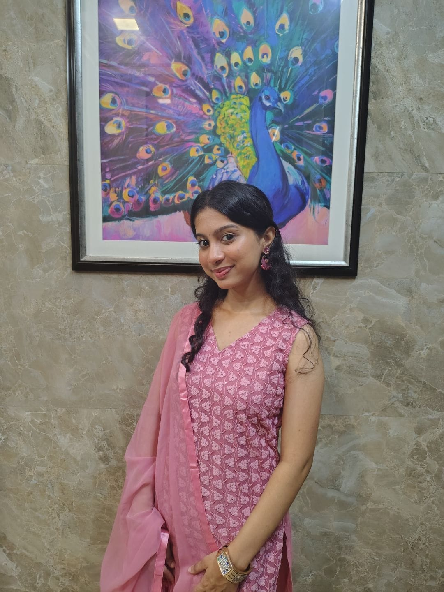

the beginning
That Pink Kurta
10 September 2023 · Prem no divas
10 September 2023. Prem no divas. Funny how a date that looked completely ordinary at the time slowly became one of the most important dates in my little world.
I still remember seeing you in that pink kurta. I didn't know you properly. I didn't know your favourite things, your habits, your moods, your little expressions, or the person you would eventually become to me.
But I noticed you.
It wasn't some dramatic movie scene where everything suddenly became slow and there was a background song playing. It was much simpler than that. You were just there, wearing pink, being you, and somehow my eyes decided that they wanted to remember that moment.
At that point, I had absolutely no idea how many conversations would come after that day. I didn't know about the jokes, the teasing, the fights, the random plans, the food dates, the long walks, the photos, or the thousands of tiny moments that would slowly become ours.
Back then, even a small Hi or Hello from you felt bigger than it probably should have.
And maybe that's what makes the beginning so beautiful. Nothing had a name yet. There were no expectations. No promises. No idea where this was going.
Just a boy who noticed a girl in a pink kurta.
And a girl who, without knowing it, was about to become a very important chapter in his life.
Maybe some stories don't begin with a confession.
Maybe they begin with noticing someone.

the photo that started a chapter